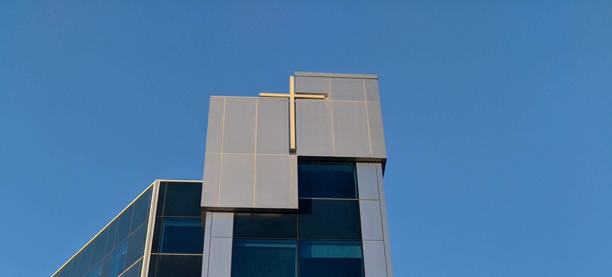
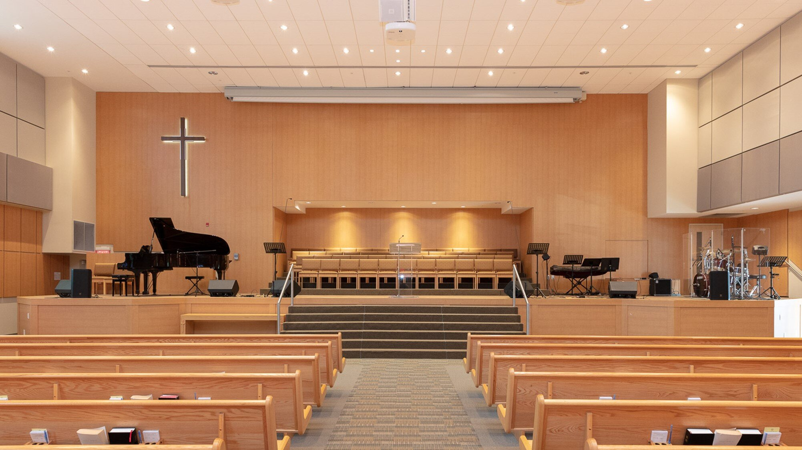
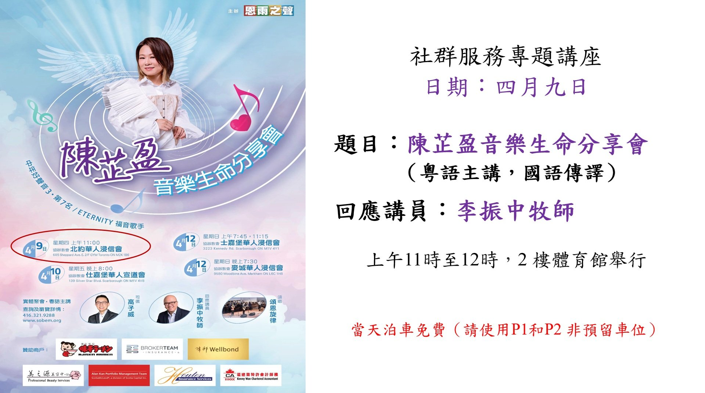
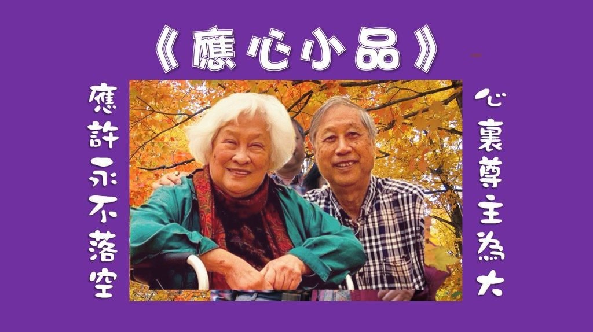
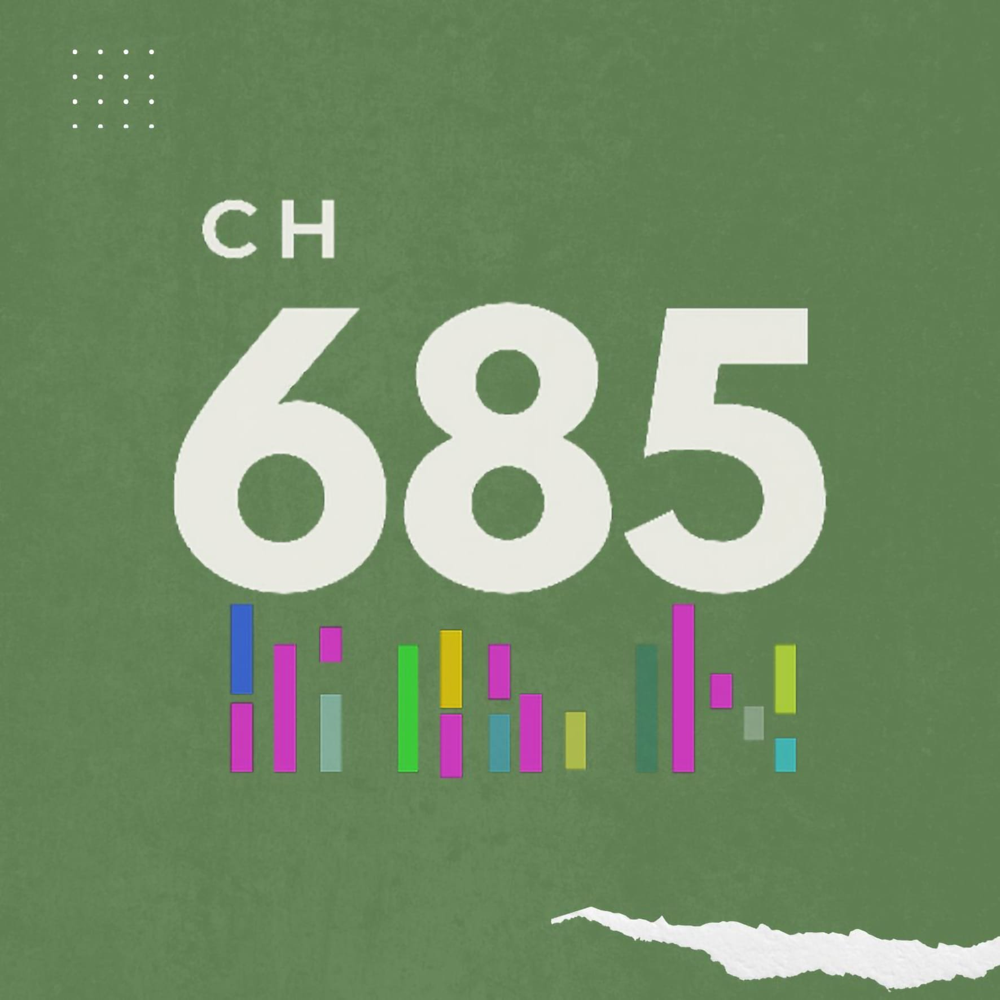
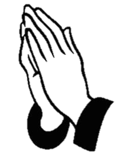

675禮堂 - 實體崇拜不設線上直播
685禮堂 - 實體崇拜及線上直播同步進行
假如您對今天的崇拜有任何意見，歡迎電郵至 nycbc@nycbc.ca
如果您想參與奉獻, 請 :

由恩雨之聲主辦，北約華人浸信會社群服務協辦，陳芷盈音樂生命分享會，將於4月9日（星期四）上午11時在685二樓體育館舉行。陳芷盈為Eternity福音歌手，曾參加香港電視節目「中年好聲音3」歌唱比賽獲第7名。活動為實體聚會，以粵語主講及設有普通話傳譯，届時有領唱，回應講員為加拿大恩雨之聲總幹事李振中牧師。
當天泊車免費，歡迎弟兄姊妹邀請親友參加。該分享會也會在其他教會舉行，詳情請參閲海報，查詢及瀏覽網頁：www.sobem.org 或致電：416-321-9288。
關顧事工與泉源輔導中心合辦《護愛同行 - 失智者及照顧者支援計劃》，此計劃整合靈性關懷與專業輔導，陪伴失智症人士及其照顧者，在困境中體驗上主的同在、群體的支持與生命的盼望。
日期：4月14日至5月19日（逢週二，共六節）
時間：上午10:00至下午12:00
地點：685三樓301室
費用：全免
截止報名日期：3月6日

鼓舞人心、連繫社區、燃亮生命
Unite, Ignite, Community

粵語堂多媒體創作事工誠意獻上: Channel 685, 一個以 "鼓舞人心、連繫社區、燃亮生命" 為目標的多媒體平台
詳情查詢請聯絡王建革牧師。
殷勤讀聖經，生命更豐盛。

每週六上午 9:30-10:30 在網上 (Zoom) 進行，鏈結: https://nycbc-ca.zoom.us/j/88293979052?pwd=FcbwSsAuAPVFbt3n5GdiLvB2gZKkPD.1 , 歡迎參加。
註: 有意參加祈禱會的弟兄姊妹, 請先按左面的 [登記] 鍵登記。登記後, 你將會在每星期五收到參加祈禱會的邀請電郵 (Invitation Email)